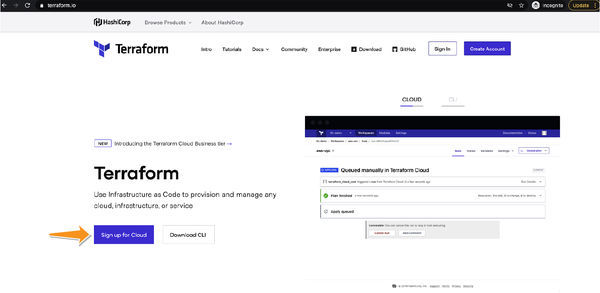
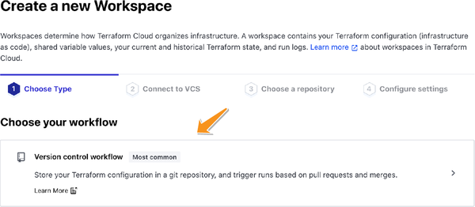
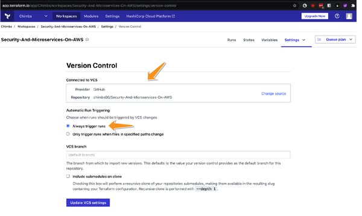
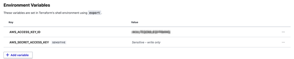
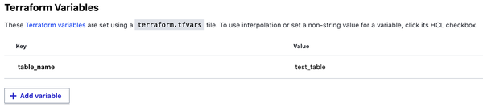
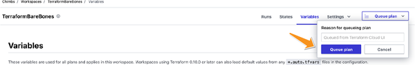
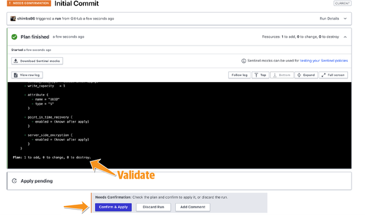
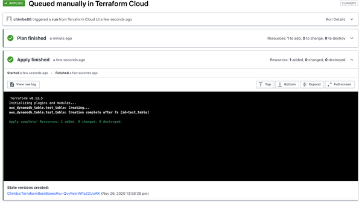

A cloud infrastructure requires a provisioning and maintenance regime in the same way as your application code. Clicking through AWS Console screens is an easy way to get started, but it won’t scale in larger organizations. This is where tools like Cloud Formation, AWS CDK, and Terraform come in handy. Terraform is an open source “infrastructure as code” tool written in Go by HashiCorp that relies on a simple descriptive language to define all your cloud resources. Terraform specializes in creating entire server instances on AWS for you while making a detailed map of all the infrastructure that you have running on AWS. Thus, it’s a highly effective tool for managing your AWS inventory at scale.
Terraform is also extremely modular and lets you reuse your infrastructure-provisioning code efficiently. So if you need to re-create your infrastructure for an additional team or environment, Terraform’s modular design protects you from code repetition. This is especially useful when dealing with microservices since it is common to have independently running replicable architecture for each end user use case.
Many books on Terraform do a great job explaining it in depth. I personally enjoyed reading Terraform: Up and Running by Yevgeniy Brikman (O’Reilly). HashiCorp also provides great documentation on its website if you want to learn more. Here, I go over the basics to teach you what you need to get started and use the source code that is provided with the rest of the book.
For the purposes of this appendix, I have created a sample GitHub repository that you can fork and use to test your own code.
The easiest and probably quickest way to use Terraform is to sign up for Terraform Cloud, a fully managed cloud offering. You can sign up for a free account, as shown in Figure A-1.

Within each cloud account, you can create workspaces that mirror an infrastructure setup you would like to deploy to the cloud environment. Each workspace corresponds to a Git repository where you can stage and save your Terraform scripts. You can choose the version control workflow while creating your workspace, as shown in Figure A-2.

Version control workflow is the easiest way of connecting your GitHub repository to Terraform Cloud. This way, you can have a Git-versioned infrastructure setup in your GitHub repository that you automatically deploy to the cloud provider whenever you make any changes. Figure A-3 highlights how you can enable these triggers.

As you can see, Terraform Cloud can deploy your infrastructure changes as soon as you push them to your repository based on the triggers you provide, making your infrastructure setup and deployment seamless.
Within your new workspace, visit the Variables page. Terraform Cloud supports both Terraform variables and environment variables. We’ll use both types in this tutorial. Scroll down to the Environment Variables section and create two variables:
AWS_ACCESS_KEY_ID
AWS_SECRET_ACCESS_KEY
Check the Sensitive checkbox for both variables and click the “Save variable” button to save each one. Once you are done, the environment variables section should look as shown in Figure A-4.

In this section, I will walk you through some of the building blocks of the Terraform process that allow you to convert your Terraform-managed code into cloud resources on AWS.
Terraform uses the provider to integrate with various cloud systems. A provider takes Terraform syntax and translates it into API calls for the cloud system you are using (in this case, AWS). Once this is done, the provider can provision various resources for you.
Terraform has built-in provider support for major cloud providers. You can use AWS in our case:
provider "aws" {
version = "2.33.0"
region = “us-east-1”
}
This code asks Terraform to create a provider that can connect to the AWS provider in the us-east-1 region.
The Terraform plan phase builds an execution plan that compares the desired state of your AWS account with its current state. If Terraform does not detect any changes to resources or root module output values, the Terraform plan will evaluate that no change is required. A list of resources that require creation or destruction on the cloud is then created, and finally, basic validation on your code syntax is performed.
As we have reviewed the basic building blocks of Terraform, let us now look at how your Terraform modules are implemented.
When running Terraform plan or Terraform apply in your working directory, the .tf files together form the root module. Any resources that you declare in these files will be added to your desired state during the plan phase and created on your cloud when you apply this plan.
The root module can also call other modules, thus enabling code reuse.
You can declare input variables in your .tf files using the following syntax:
variable "table_name" {
type = string
}
These variables can be passed to the main module through the same interface where you passed environment variables, as shown in Figure A-5. Secrets and other sensitive variables are good candidates to be passed as Terraform variables.

Reference these variables using this syntax:
var.<variable_name> table_name = var.table_name
You can also declare local variables (called local values) in order to promote code reuse. They can be included in any of your .tf files by adding the following code:
locals {
table_name = "test_table"
}
Reference these values using the following syntax:
local.<value_name> table_name = local.table_name
Each resource in your module defines one or more infrastructural items, such as AWS Elastic Cloud Compute (EC2) instances, DynamoDB tables, or any other storage services on AWS. The goal of your module will be to create these resources on the AWS cloud and track their state through your Terraform configuration files:
resource "aws_dynamodb_table" "test_table" {
name = "test_table"
read_capacity = 1
write_capacity = 1
hash_key = "UUID"
attribute {
name = "UUID"
type = "S"
}
}
The final step is to run and apply your plan so your resources can be created. Click the “Queue plan” button, as shown in Figure A-6.

Depending on your configuration, Terraform Cloud may ask for your confirmation before applying a plan, as shown in Figure A-7. In this phase, it is important for administrators to look at the output of the plan phase to make sure no surprises are in store when Terraform moves from its current state to the desired state.

If all goes well, you should see your plan being applied successfully on your AWS Cloud account, and you’ll see a successful application, as shown in Figure A-8.

Once applied, you should be able to see your resources being created on your AWS account.